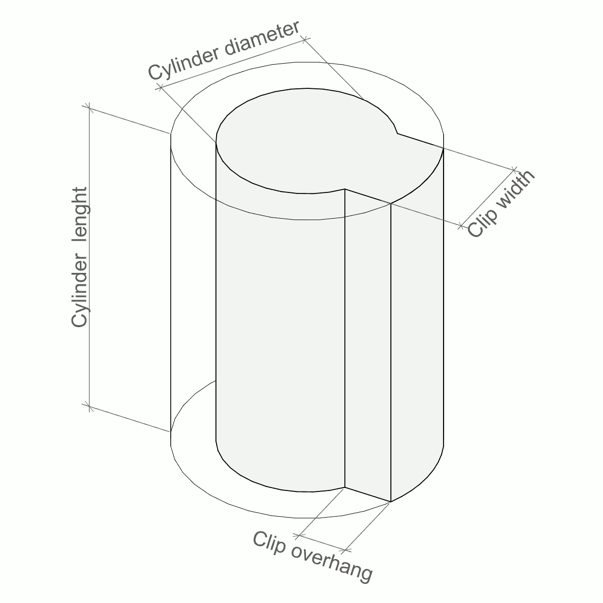

Installation
- Install (if not done) OpenSCAD
- Clone this repository or copy
pen_case.scad in a
directory pen_case
- Copy from https://dkprojects.net/openscad-threads/
threads.scad in a directory above pen_case.
Creating a pen case
You can use OpenSCAD customizer or just change variables at the
beginning of the pen_case.scad manually if OpenSCAD editor
(or any other text editor).
Print settings
FINESS- How many faces will have cylinder approximation. More mean
smoother model but longer render time (50-80 is enough for useful
cases).
TOLLERANCE- A "gap" between real and printed object. depends on 3d printer
quality and printing speed
NOZZEL_D- Diameter of your printer nozzel, now used only to print latch
support.
PRESENT- Build pen "case" or pen "model".
Case parameters
CASE_MIN_LENGTH and CASE_MIN_D- You can use non 0 values if you want to build same size cases for
different pens.
CASE_TOP_BOTTOM_WALL_MIN and CASE_WALL- Minimal thickness of the walls.
LATCH_PIN_H- Lutch pin hight. 2.4-1.6 looks the best values
LATCH_H and LATCH_DEPTH- Lutch hand parameters (hight and depth). I do not recommend use
LATCH_H bigger then LATCH_DEPTH and both
less then 1.6 and more then 3. Top of the hand will be
CASE_WALL depth and LATCH_DEPTH will not be
less then CASE_WALL.
CASE_TURN- How many turns minimum needed to open this case.
CASE_TR_W- Width of the case thread.
CASE_TR_L- (Minimum) length of the case thread. If 0 will be calculated
automatically
CASE_N- Number of faces of this case. Also it is minimum number of thread
starts
CASE_ROUNDING- Radius of case rounding. Used if
CASE_ROUNDING_MODE
is not "sharp"
CASE_ROUNDING_MODE-
- "sharp"
- No roundings.
- "2d"
- Only side walls.
- "3d"
- Side walls top and bottom (difficult to print).
- "2.5d"
- Side walls with
CASE_ROUNDING radius and top and
bottom with CASE_WALL.
CASE_TR_NN- How many thread starts do per "face". If it is not 1 can be
difficult to close case correctly.
CASE_TR_SPACE_RATIO- 1 mean as dense thread is possible, more then 1 makes spaces in
threads. With small number of faces can be used to make longer and
"steeper" thread.
CASE_TAKE- How much pen you will see after opening this case. Depend on how
much you need to take the pen from the case.
LATCH_MAX_L- Max latch length, used to limit length and keep the latches stiff.
LATCH_SUPPORT- Construct or not the latches support for 3D printer
Text setup
Probably fonts and its sizes depend on a computer setup, so just
experiment.
Pen "model" description
Pen described as sequence of sections. Each section described with
numbered from 1 to 6 sets of variable
PEN_n_D- Cylinder Diameter
PEN_n_L- Cylinder Length (section skipped if 0)
PEN_n_CLIP_DD- Clip overhang (section will be simple cylinder if 0)
PEN_n_CLIP_W- Clip width
You can see "model" of the pen if you change variable
PRESENT to "model" and click on a "preview".